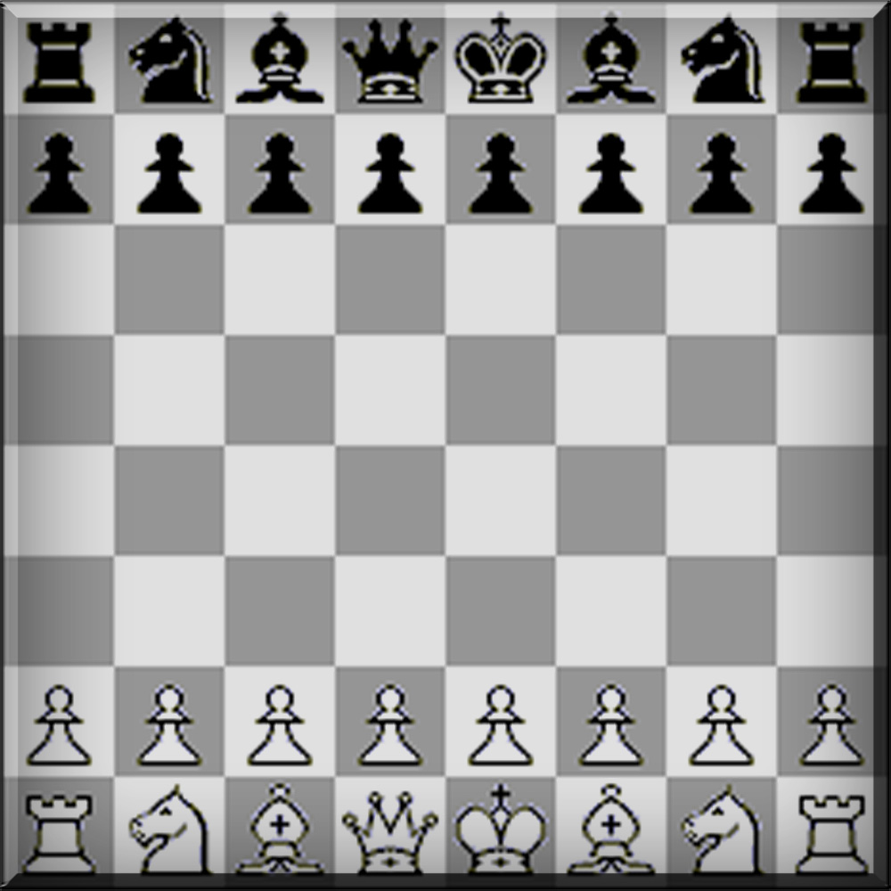

PEDONE |
CAVALLOALFIERETORREDONNARE |
|  | Gli scacchi sono un gioco di strategia che si svolge su una tavola quadrata detta scacchiera, formata da 64 caselle (o "case") di due colori alternati, sulla quale ogni giocatore dispone di 16 pezzi (bianchi o neri; per traslato, "il Bianco" e "il Nero" designano i due sfidanti: un re, una donna (o "regina"), due alfieri, due cavalli, due torri e otto pedoni; obiettivo del gioco è dare scacco matto, ossia attaccare il re avversario impedendogli di sottrarsi alla cattura. |